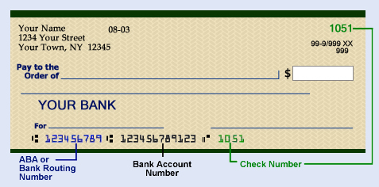

ABA Routing Number:
This 9-digit number identifies your bank. The number starts with 0, 1, 2, or 3.
Account Number:
This checking account number, assigned by your bank, is 6 digits or more.
Check Number:
This sequential number, printed in two locations, allows you to keep track of the checks you write.
DO NOT include your check number when filling out the ABA or Account number boxes.